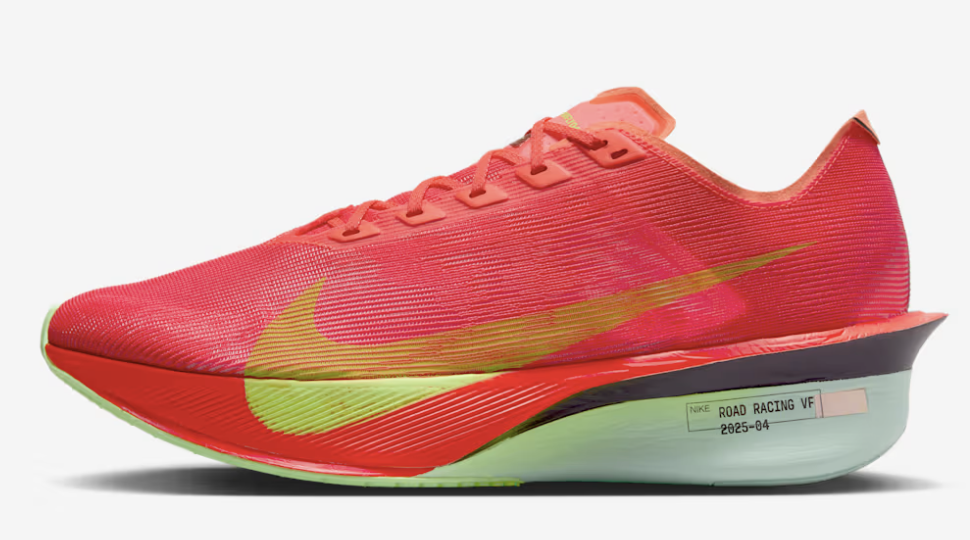
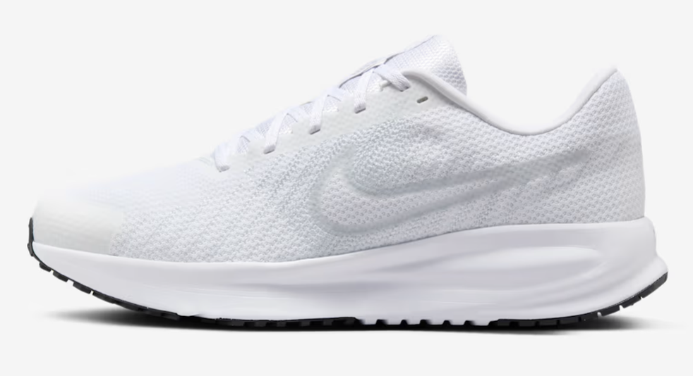
2026-09-04
To estimate the effect of an intervention (Δ)
To make claims while controlling the rate of incorrect conclusions
If your goals are those, then you are working within a Frequentist framework and should use null hypothesis significance testing (NHST).
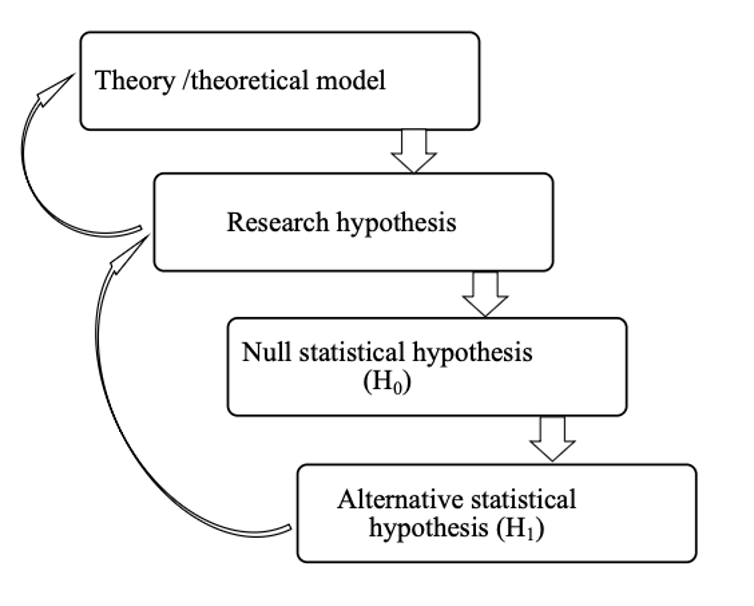
H: The new shoes show will increase running economy to a larger extent than the old shoes


| Reality | Difference detected | No difference detected |
|---|---|---|
| No true difference | Type 1 error (\(\alpha\)) | true negative |
| True difference | true positive | Type II error (\(\beta\)) |
Power = 1 - \(\beta\)
The probability of finding a significant effect when \(H_0\) is false
If we were going to repeat the same experiment 1000 times, how many times would we observe a significant effect?
Distribution of p-values when power is ~80%
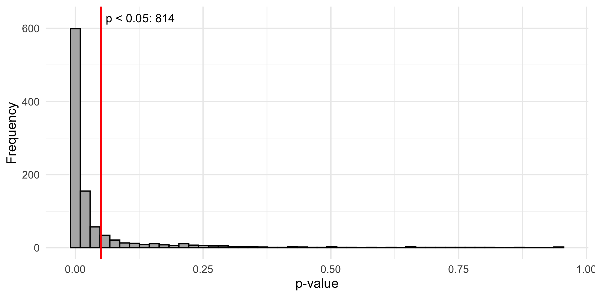
1 - Increased probability of rejecting \(H_0\) when \(H_0\) is true
2 - When a study design is underpowered to detect Δ, a non-significant \(p\)-value provides little information
Scenario A: A study designed with 90% to detect Δ yields a null finding (\(p\) < \(\alpha\))
Scenario B: A study designed with 30% to detect Δ yields a null finding (\(p\) < \(\alpha\))
What can we learn from study A and study B?
3 - Reduced uncertainty (narrower 95% CI)
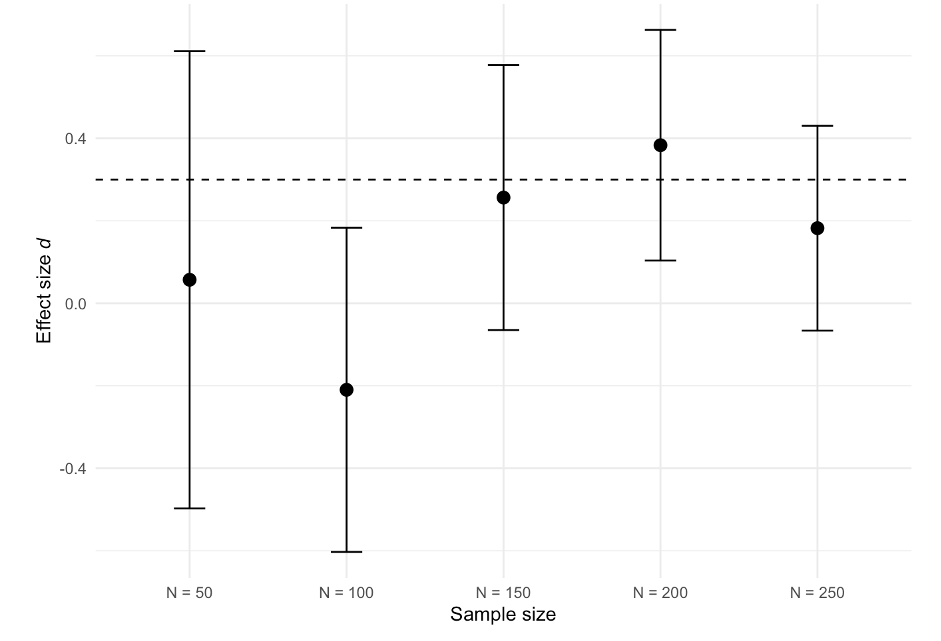
Both insufficient and excessive sample sizes raise ethical concerns:
Too few participants → the study may be underpowered and unable to detect meaningful effects
Too many participants → unnecessary exposure to potential risks or burdens
Consider, for example:
evaluating a treatment to improve post-surgical recovery
conducting invasive procedures such as muscle biopsies
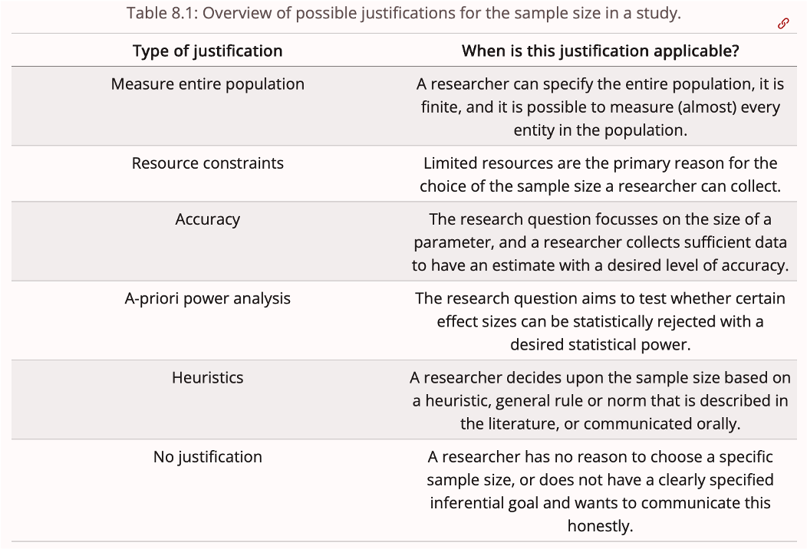
\[ n = 2 * (\frac{Δ}{\sigma})^2 * (Z_{\alpha/2} + Z_{\beta})^2 \]
\(n\): the number of participants
Δ: the difference sought (intervention effect)
\(\sigma\): the presumed standard deviation
\(\alpha\) : the probability of type I error, given \(H_0\) is true
\(\beta\): the probability of type II error, given \(H_0\) is false
The critical effect size represent the smallest detectable effect that can reach statistical significance
Its value depends on the given sample size, \(\alpha\), and test statistic.
It can be useful to calculate the critical effect size when designing a study and evaluate whether such effects are plausible
The typical sample size in sports and exercise science is ~30 participants
Suppose we are interested in comparing the effect of caffeine on CMJ height. What effect size could we expect?
crit_d <- criticalESvalue::critical_t2s(m1 = 60, m2 = 57, sd1 = 12, sd2 = 12, n1 = 15, n2 = 15, var.equal = FALSE,hypothesis = "greater", conf.level = 0.95)
kableExtra::kable(dplyr::bind_rows(
type_effect_size = c("d", "g"),
effect_size = c(crit_d$d, crit_d$g),
critical_effect_size = c(crit_d$dc, crit_d$gc))
)| type_effect_size | effect_size | critical_effect_size |
|---|---|---|
| d | 0.250000 | 0.6211652 |
| g | 0.243233 | 0.6043516 |
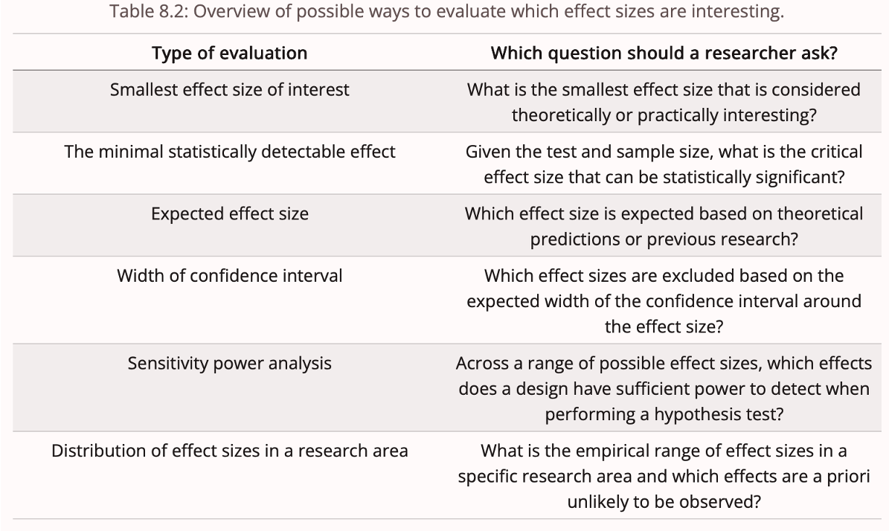
Because Δ is unknown, researchers need to assume it
Sports scientists often rely on single studies, meta-analysis or pilot studies
However, each of these approaches comes with its own limitations
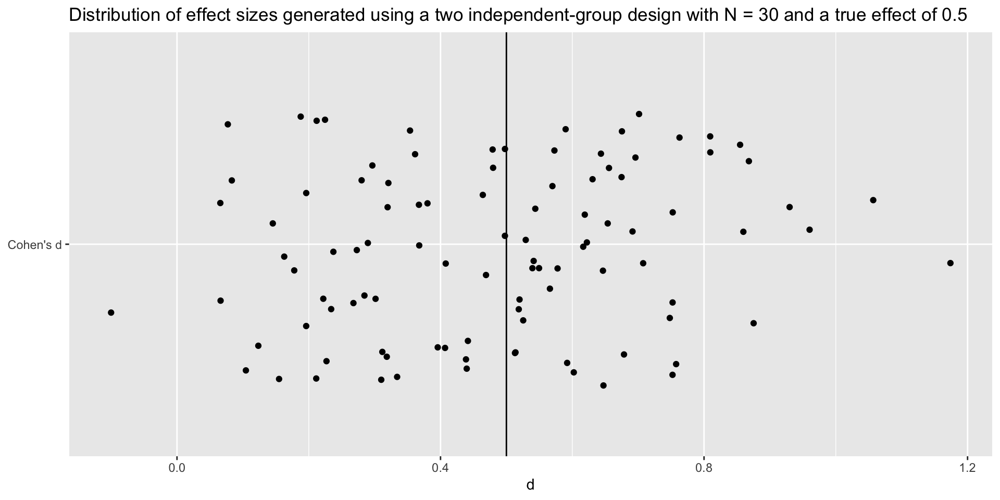
By chance, it is possible that the estimated Δ is biased.
Perugini, Gallucci, and Costantini (2014) suggest to take into account the uncertainty of the sample effect size by using the lower bound of a 60% CI
The combination of underpowered study designs and selection bias (including publication bias and questionable research practices) often leads to inflated effect sizes.
For example, Murphy et al. (2025) reported a median decrease of 75% in replicated effect sizes compared to the original findings.
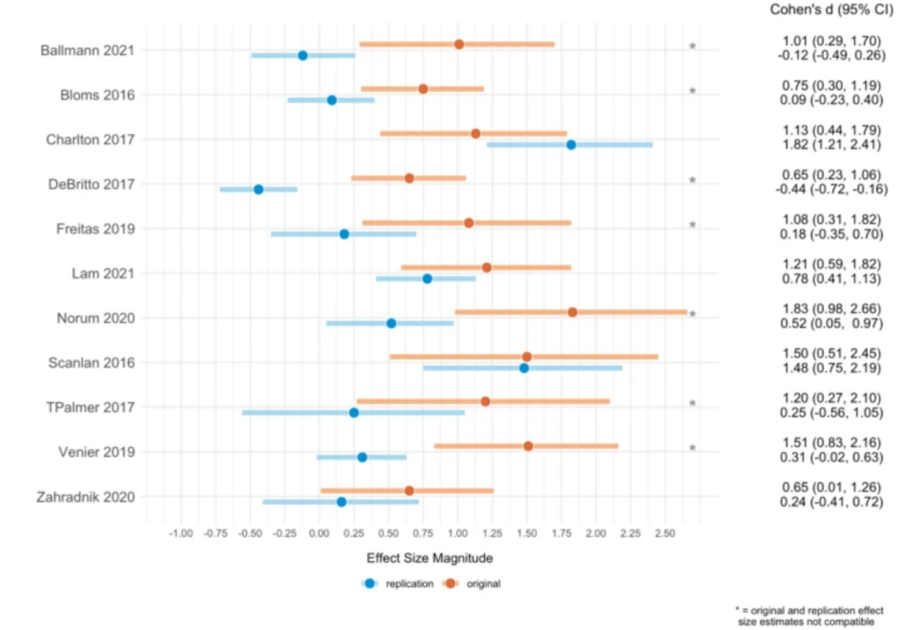
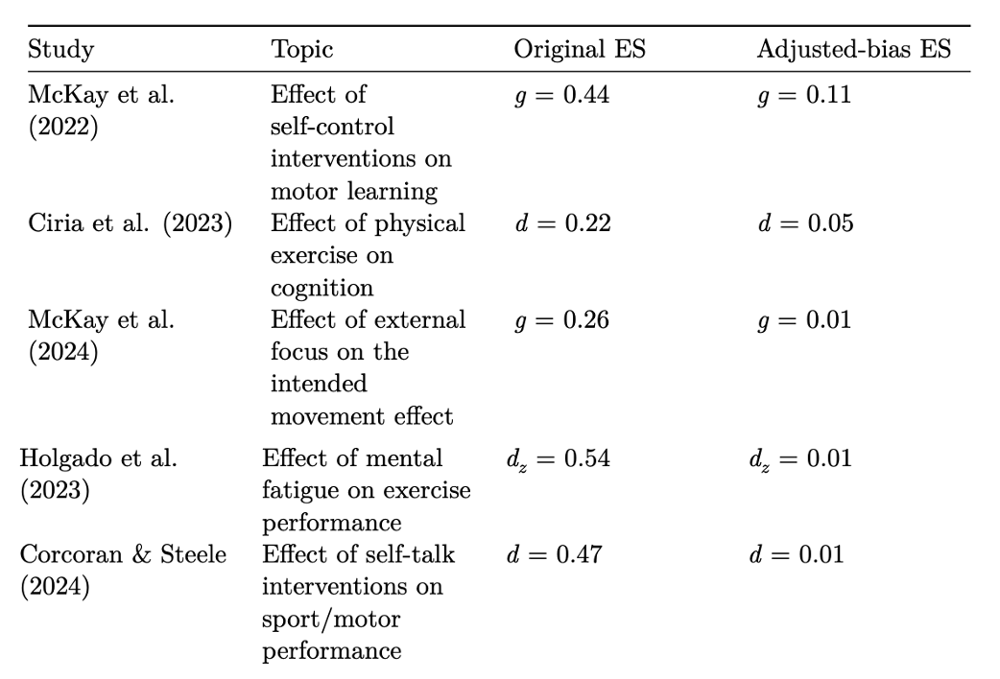
PICOS:
Population
Intervention
Comparator
Outcome
Study design/statistical test
Elite athletes, highly-trained athletes, sedentary participants, patients, students, etc.
Intervention effects may vary across populations.
For example, a training intervention is likely to produce greater performance improvements in untrained or less trained individuals compared to highly trained athletes.
Dose, intensity, duration, type of intervention, frequency, etc.
All these variables can impact the intervention effect.
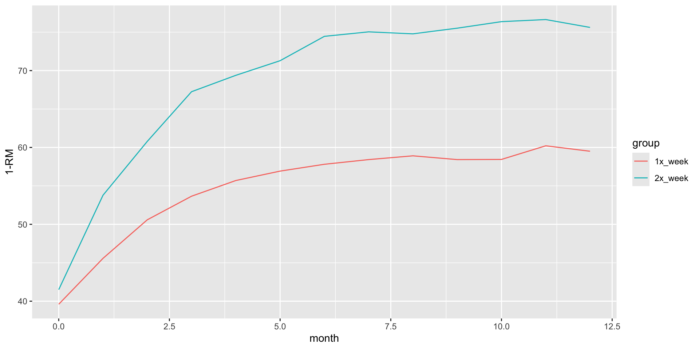
What outcome was used to measure the impact of the intervention?
\(VO_{2MAX}\), velocity at lactate threshold 2, countermovement jump (CMJ) height, 10-m sprint velocity, etc.
The same intervention may yield different results depending on the measured outcome.
For example, plyometric training is likely to improve CMJ height to a larger extant than 10-m sprint velocity.
Studies included in meta-analyses may vary across these 5 dimensions
This may result in effect-size heterogeneity
If heterogeneity is present, researchers should focus on subgroup of studies that are more comparable
These 5 dimensions need to be taken into account when selecting an effect size from a previous study/meta-analysis
Ignoring these dimensions may result in selecting a Δ that does not match our Δ of interest
Pilot studies can provide useful data for some parameters (e.g., variability, feasibility) (Ying et al. 2025)
Pilot trials are not suitable for determining Δ for two main reasons (Ying et al. 2025; Albers and Lakens 2018):
1 - pilot trials have small sample sizes that result in imprecise estimates of Δ (wide 95% CI)
2- Pilot trials with promising results might be more likely to be published resulting in inflated Δ estimates
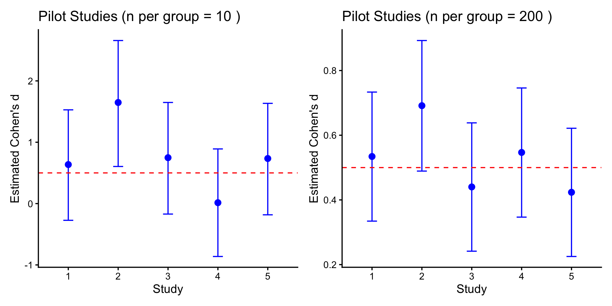
Often sports scientists use Cohen’s d thresholds to justify their effect size
This is problematic because it ignores the study context (Primbs et al. 2022)
Cohen’s d thresholds were obtained from studies published in social psychology studies in the 80s (Cohen 1988)
Can we expect that a study published in social psychology has similar contextual factors (PICOS dimensions)? Definitely NOT
Less problematic than Cohen’s d thresholds, but the study context not fully taken into account
Distribution of effect sizes in Strength and Conditioning resesearch (Swinton and Murphy, n.d.; Swinton et al. 2022)
Distribution of effect sizes in exercise treatment of tendinopathy (Swinton et al. 2023)
The difference you would not like to miss
The smallest effect size that is considered practically or theoretically interesting (Lakens 2022)
Not affected by selection bias
Difficult to determine
d <- 0.2
p <- 0.9
alpha <- 0.05
type <- "two.sample"
# directional test
directional <- pwr::pwr.t.test(d = d, power = p, sig.level = alpha, type = type, alternative = "greater")
# Non-directional (two-sided) test
non_directional <- pwr::pwr.t.test(d = d, power = p, sig.level = alpha, type = type, alternative = "two.sided")
# Combine results
data.frame(test = c("directional", "non-directional"), sample_size = c(ceiling(directional$n), ceiling(non_directional$n))) test sample_size
1 directional 429
2 non-directional 527| term | estimate | std.error |
|---|---|---|
| groupTreat | 9.178513 | 0.7090532 |
| groupTreat | 7.632938 | 1.2540590 |
The larger \(\rho\) the smaller the SE and the higher the power of the test
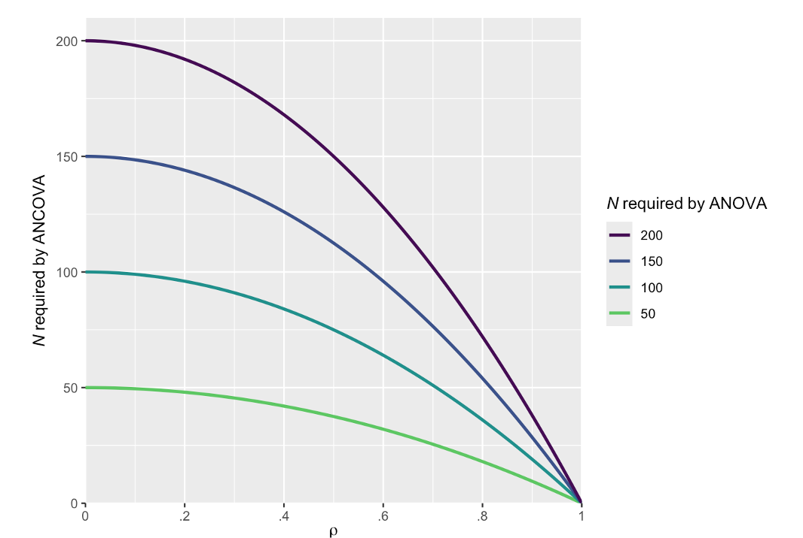
Original figure obtained from Solom Kurz’s blogpost
Disjunction vs. conjunction hypothesis
Disjunction requires adjusting for multiple comparisons
Claim there is an effect after observing any \(p\) < \(\alpha\)
H: Orange shoes improve running economy and reduce DOMS
Researcher measures 2 outcomes and conducts 2 tests at an \(\alpha\) level of 0.05
In a disjunction hypothesis, the researcher is willing to support H if any test yields a significant outcome
Researcher needs to adjust for multiple comparisons (e.g., Bonferroni correction; 0.05/number of tests)
Sports scientists often perform multiple hypothesis tests
Each one of these tests will achieve a certain level of statistical power
Option A): Design a study with adequate power for the smallest effect size
Option B) Differentiate between primary, secondary and exploratory tests
Perform a sensitivity power analysis for secondary tests (Lakens 2022)
A sensitivity power analysis indicates the range of effect sizes that a given study design is sufficiently powered to detect.
Informative when the sample size is fixed (or data has already been collected) and secondary analysis
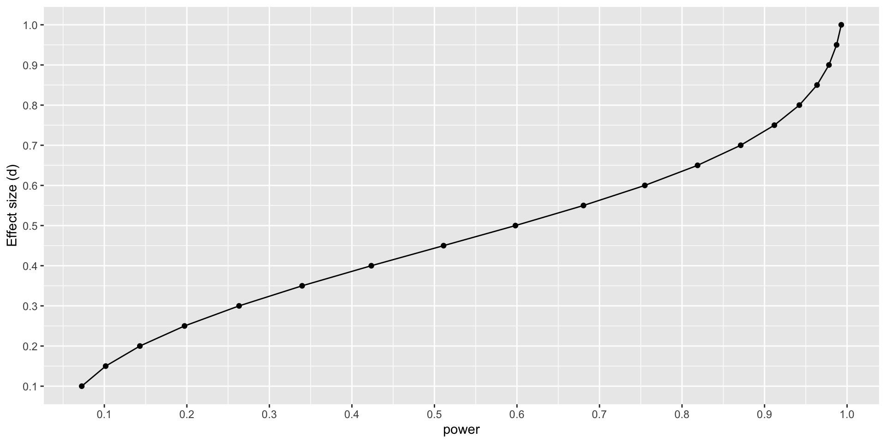
Typical sample size in the field is about 35 participants.
About 40% of studies (\(N\) = 350) reported an a priori power analysis.
Average statistical power of 11% (\(N\) = 350) (Mesquida et al., n.d.).
Reporting an a priori power analysis was not associated with larger sample sizes or a higher proportion of supported hypotheses.
Some reasons are:
Many a priori power analyses are conducted in a way that yields the sample size researchers aim to recruit — also known as “sample size samba” — (Schulz and Grimes 2005)
Inflated effect sizes
Using an effect size estimate that does not match the intervention effect (difference across the PICOS dimensions)
Using a statistical test that does not match statistical test used to evaluate the hypothesis
Study aim: to determine whether acute moderate hypoxia, compared to normoxia, had no detrimental effect on power output during 3 x 30-s all-out efforts.
Sample size justification: “The sample size was estimated using a power analysis software G*Power (version 3.1.9.2; Bonn University, Bonn, Germany) based on the mean effect (d = 3.18) of the within-condition decrement to peak and mean power output during repeated 30-s Wingate efforts.10 The power analysis resulted in a calculated total sample size of 4 participants.”
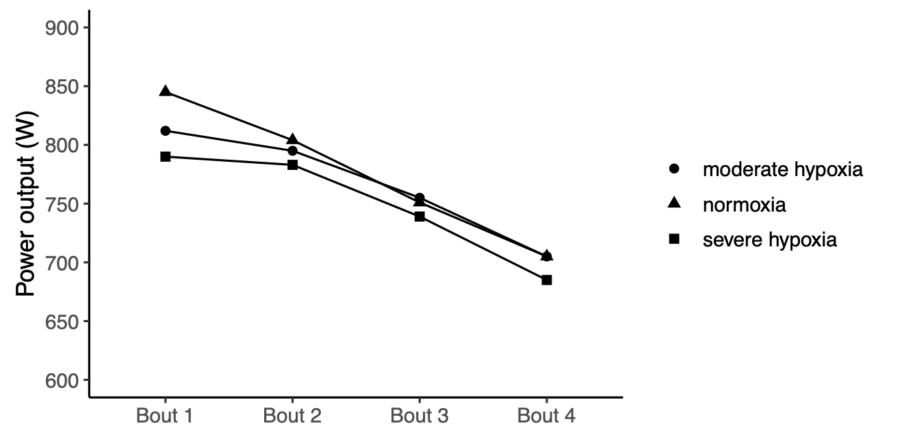
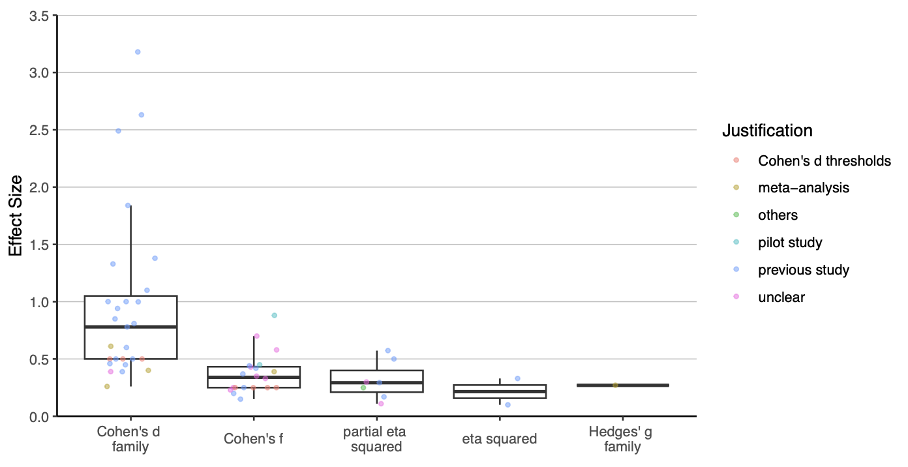
Key information, such as the statistical test used and the assumed effect size, is frequently missing
All information used to conduct the power analysis should be reported
The justification of the effect size and how it was calculated should be reported
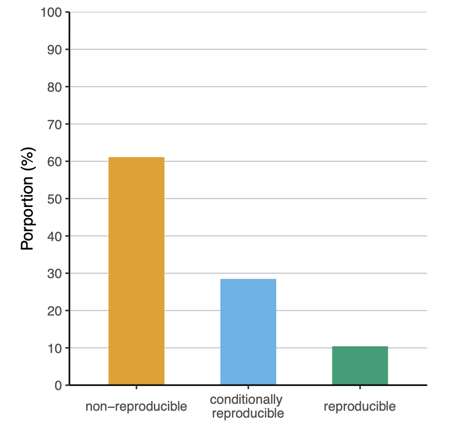
What are you powering for?
Apply PICOS framework when selecting a study based on previous research
Account for biased effect sizes when selecting a study based on previous research
Collaborate with an applied statistician
Report all information required to evaluate its soundness and reproducibility